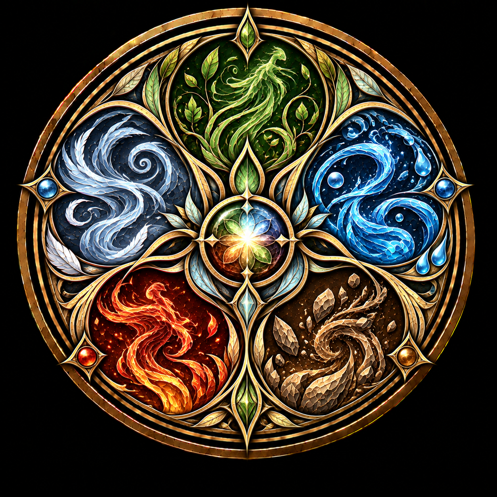

← Zur WeltübersichtWeltwiki · Natur
Naturgeister
Naturgeister sind übernatürliche Verkörperungen der Natur. Sie sind weder Wesen noch Fabelwesen und besitzen im Normalfall keinen eigenen physischen Körper. Vielmehr sind sie unmittelbar mit den natürlichen Elementen, Erscheinungen und Lebensformen verbunden, aus denen sie hervorgehen.
Dabei existieren Naturgeister nicht lediglich innerhalb ihres jeweiligen Elements und kontrollieren dieses auch nicht von außen. Sie sind ein Teil des Elements selbst. Ein Windgeist ist somit nicht ein unsichtbares Wesen, das die Luft bewegt; seine Existenz ist unmittelbar mit dem Wind verbunden. Ebenso ist ein Wassergeist mit dem Fließen des Wassers verbunden, während ein Baumgeist Teil des Lebens und Wachstums seines Baumes ist.
Naturgeister besitzen ein eigenes Bewusstsein und nehmen ihre Umgebung wahr. Wie komplex dieses Bewusstsein ausgeprägt ist, hängt stark von der Größe und Bedeutung des natürlichen Zusammenhangs ab, mit dem der jeweilige Geist verbunden ist.
Entstehung und Existenz
Naturgeister entstehen gemeinsam mit dem Teil der Natur, zu dem sie gehören, und existieren grundsätzlich so lange wie dieser. Verschwindet die natürliche Grundlage eines Geistes vollständig, endet auch seine eigenständige Existenz.
Für Naturgeister selbst besitzt die Grenze zwischen Existenz und Nichtexistenz jedoch nicht zwangsläufig dieselbe Bedeutung wie für körperliche Lebewesen. Insbesondere kleine Naturgeister können entstehen, verschwinden, sich voneinander trennen oder wieder miteinander verschmelzen, wenn sich die zugrunde liegende Natur entsprechend verändert.
Ein See kann beispielsweise einen großen Wassergeist beherbergen. Wird eine Tasse Wasser daraus entnommen, bleibt der Wassergeist des Sees bestehen, wird jedoch geringfügig kleiner. Gleichzeitig entsteht mit dem abgetrennten Wasser ein eigener kleiner Wassergeist in der Tasse. Wird das Wasser anschließend wieder in den See gegossen, verschmilzt auch dieser Geist wieder mit dem größeren Wassergeist.
Auf diese Weise können selbst kleinste natürliche Einheiten eigene Naturgeister besitzen. In einzelnen Regentropfen existieren beispielsweise sehr kleine Wassergeister, deren Bewusstsein kaum über ihre unmittelbare Existenz hinausgeht.
Eine Besonderheit stellen Feuergeister dar. Sie sind nicht ausschließlich in bereits brennendem Feuer vorhanden, sondern können auch mit leicht entflammbaren Materialien verbunden sein. So befindet sich beispielsweise bereits in einem noch nicht entzündeten Kerzendocht ein Feuergeist.
Bewusstsein und Persönlichkeit
Die Komplexität eines Naturgeistes wächst mit der Größe des natürlichen Zusammenhangs, den er verkörpert.
Sehr kleine Naturgeister besitzen zwar ein eigenes Bewusstsein und nehmen ihre Umgebung wahr, verfügen jedoch nur über eine entsprechend einfache Persönlichkeit. Der Wassergeist eines einzelnen Regentropfens existiert und nimmt wahr, ohne daraus zwangsläufig eine ausgeprägte Individualität zu entwickeln.
Größere Naturgeister können dagegen zunehmend komplexe Persönlichkeiten besitzen. Der Geist eines Flusses kann bereits eine ausgeprägte Individualität entwickeln und trägt üblicherweise den Namen des Flusses, mit dem er verbunden ist.
Besonders große Naturgeister können ein äußerst komplexes Gefühlsleben entwickeln. Sie sind zu Freundschaft, Zuneigung und Liebe fähig und können persönliche Beziehungen sowohl zu anderen Naturgeistern als auch zu körperlichen Lebewesen aufbauen, auch wenn dies höchst selten passiert.
Naturgeister können einander wahrnehmen und miteinander kommunizieren. Ebenso nehmen sie ihre Umgebung und die darin lebenden Personen sehr genau wahr. Besonders weit verbreitete Naturerscheinungen ermöglichen dadurch einen umfangreichen Austausch von Informationen. Windgeister können beispielsweise über große Entfernungen erfahren, was an anderen Orten geschieht, da Luft nahezu überall vorhanden ist und die Geister untereinander Informationen weitergeben können.
Arten von Naturgeistern
Naturgeister können in zahlreichen Formen auftreten. Zu den bekannten Arten gehören unter anderem Wasser-, Feuer-, Wind-, Erd-, Baum- und Waldgeister. Diese Aufzählung ist jedoch nicht abschließend. Grundsätzlich können auch andere natürliche Erscheinungen und Zusammenhänge mit eigenen Naturgeistern verbunden sein.
Eine eindeutige Grenze dafür, welche Bestandteile oder Phänomene der Natur einen eigenen Geist hervorbringen können, ist nicht bekannt.
Jeder Baum besitzt einen eigenen Baumgeist. Dieser ist unmittelbar mit dem Baum verbunden und unter anderem für dessen Wachstum und natürliche Entwicklung von Bedeutung. Baumgeister können darüber hinaus auf ihre Bäume einwirken. Wer ihre Gunst besitzt, kann sie beispielsweise darum bitten, Äste gezielt zu bewegen.
Waldgeister existieren zusätzlich zu den einzelnen Baumgeistern eines Waldes. Sie entstehen gemeinsam mit dem Wald und sind mit diesem als Ganzem verbunden. Mit zunehmender Größe des Waldes wächst auch die Präsenz und Macht seines Waldgeistes, weshalb die Geister großer Wälder zu den besonders komplexen und ausgeprägten Naturgeistern gehören können.
Ein Waldgeist besitzt jedoch keine unmittelbare Kontrolle über sämtliche Bestandteile seines Waldes. Möchte er beispielsweise Einfluss auf einen bestimmten Baum nehmen, kann er dessen Baumgeist darum bitten, entsprechend zu handeln. Seine Verbindung gilt dem Wald als Ganzem, während die einzelnen Bestandteile weiterhin ihre eigenen Naturgeister besitzen.
Ein Waldgeist kann seinen Wald nicht verlassen.
Wahrnehmung
Für gewöhnliche Menschen und die meisten Wesen sind Naturgeister weder sichtbar noch hörbar. Ihre Auswirkungen auf die physische Welt können jedoch selbstverständlich wahrgenommen werden. Der Wind bleibt spürbar, Wasser fließt und Feuer brennt, auch wenn die damit verbundenen Geister selbst nicht wahrgenommen werden können.
Einige Personen besitzen jedoch die Fähigkeit, Naturgeister unmittelbar wahrzunehmen. Besonders mächtige Hexen können beispielsweise in der Lage sein, ihre Stimmen zu hören. Diese Fähigkeit geht von der Hexe selbst aus und hängt nicht davon ab, ob ein Naturgeist sich ihr gegenüber bemerkbar machen möchte.
In seltenen Fällen können Naturgeister auch gesehen werden. Für eine Person mit entsprechender Wahrnehmung erscheinen sie als schemenhafte, ihrem jeweiligen Element oder natürlichen Ursprung entsprechende Gestalten. Dabei handelt es sich nicht um physische Körper, sondern um eine wahrnehmbare Erscheinung des Geistes.
Die Begriffe Naturgeist und Elementargeist können dabei synonym verwendet werden.
Naturgeister und Hexen
Hexen besitzen eine angeborene Verbindung zu Naturgeistern und können ihnen durch ihre Magie ihren Willen aufzwingen. Die sogenannte Kontrolle über Naturgeister bildet die Grundlage ihrer natürlichen Magie.
Da Naturgeister jedoch ein eigenes Bewusstsein und einen eigenen Willen besitzen, handelt es sich dabei nicht um die bloße Manipulation einer willenlosen magischen Energie. Der betreffende Naturgeist nimmt den Einfluss der Hexe bewusst wahr und kann versuchen, sich ihrem Willen zu widersetzen.
Wie schwierig eine solche Kontrolle ist, hängt unter anderem vom Umfang der gewünschten Manipulation und vom betroffenen Naturgeist ab. Je größer und komplexer der natürliche Zusammenhang ist, desto schwieriger kann es sein, seinen Geist gegen dessen eigenen Willen zu beeinflussen.
Neben dieser erzwungenen Kontrolle ist jedoch auch eine freiwillige Zusammenarbeit mit Naturgeistern möglich. Wer ihre Gunst gewinnt, kann sie um Hilfe bitten, anstatt ihnen den eigenen Willen aufzuzwingen.
Naturgeister sind damit keine bloßen Quellen übernatürlicher Kraft und keine unsichtbaren Bewohner der Natur. Ihre Existenz ist untrennbar mit der natürlichen Welt selbst verbunden.
Sie leben nicht in der Natur. Sie sind die Natur.